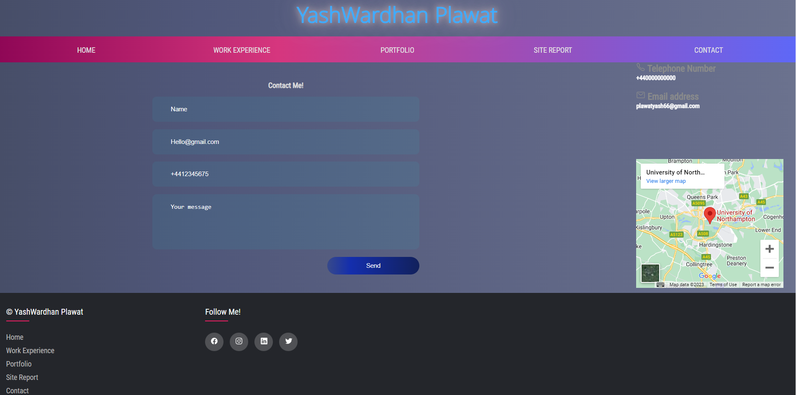
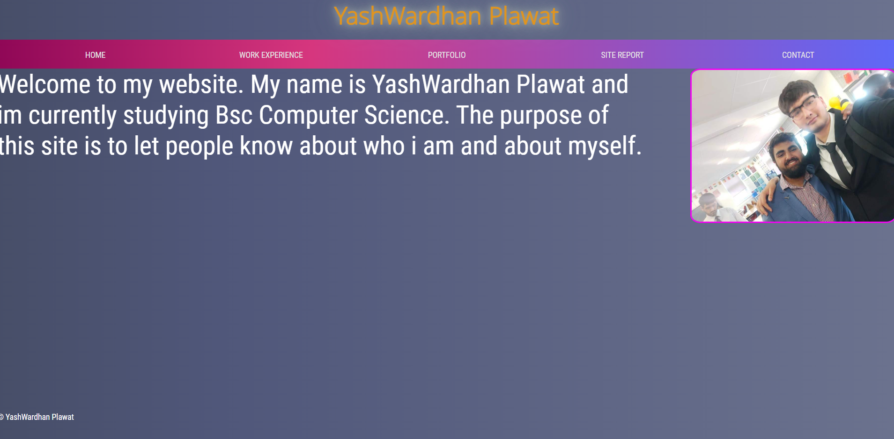
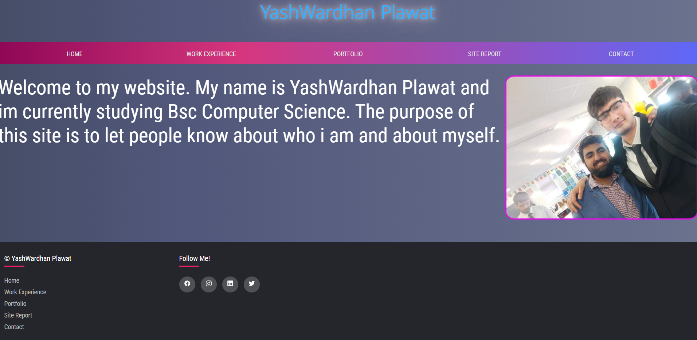
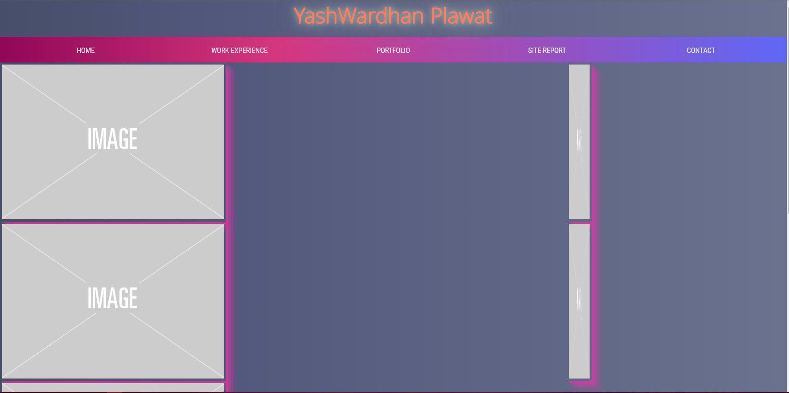
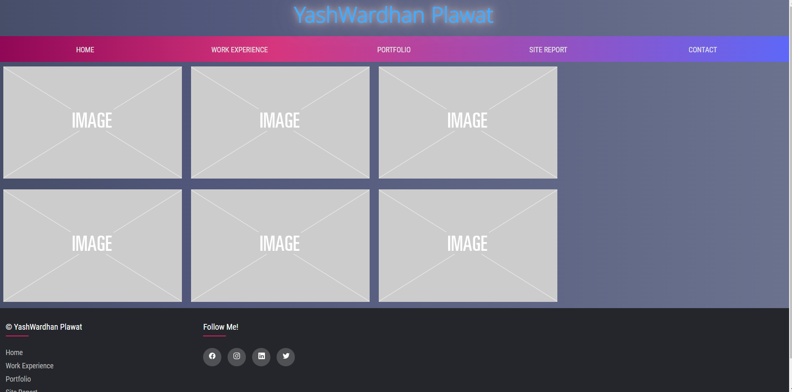
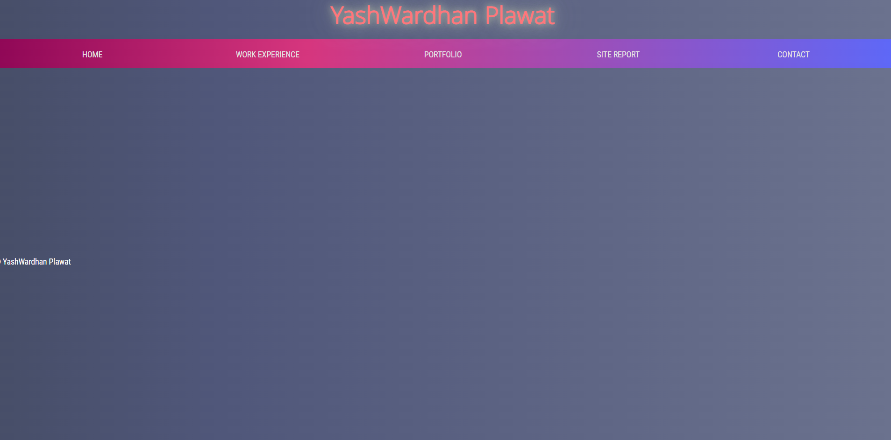
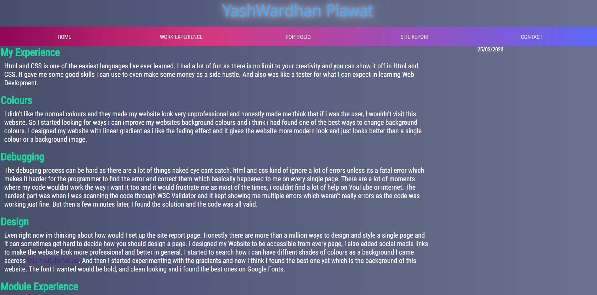
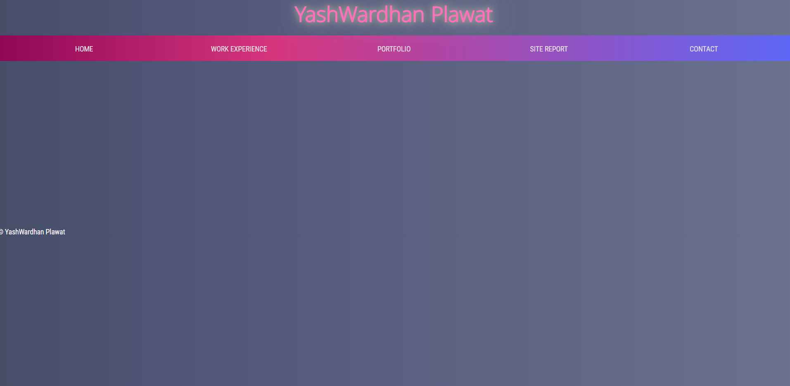
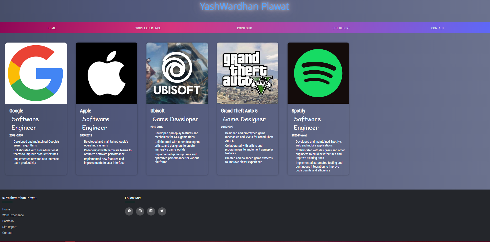

My Experience
Html and CSS is one of the easiest languages I've ever learned. I had a lot of fun as there is no limit to your creativity and you can show it off in Html and CSS. It gave me some good skills I can use to even make some money as a side hustle. And also was like a tester for what I can expect in learning Web Devlopment.
Colours
I didn't like the normal colours and they made my website look very unprofessional and honestly made me think that if i was the user, I wouldn't visit this website. So I started looking for ways i can improve my websites background colours and i think i had found one of the best ways to change background colours. I designed my website with linear gradient as i like the fading effect and it gives the website more modern look and just looks better than a single colour or a background image.
Debugging
The debuging process can be hard as there are a lot of things naked eye cant catch. html and css kind of ignore a lot of errors unless its a fatal error which makes it harder for the programmer to find the error and correct them which basically happened to me on every single page. There are a lot of moments where my code wouldnt work the way i want it too and it would frustrate me as most of the times, i couldnt find a lot of help on YouTube or internet. The hardest part was when I was scanning the code through W3C Validator and it kept showing me multiple errors which weren't really errors as the code was working just fine. But then a few minutes later, I found the solution and the code was all valid.
Design
Even right now im thinking about how would I set up the site report page. Honestly there are more than a million ways to design and style a single page and it can sometimes get hard to decide how you should design a page. I designed my Website to be accessible from every page, I also added social media links to make the website look more professional and better in general. I started to search how i can have diffrent shades of colours as a background I came accross this Youtube Video. And then I started experimenting with the gradients and now I think I found the best one yet which is the background of this website. The font I wanted would be bold, and clean looking and i found the best ones on Google Fonts.
Module Experience
I really love Web Development so far as its easy to leaarn and there is a lot more things you can learn and do independently than you could in other modules. I have gained a solid basic understanding of web designing and Development. Git and Github was one of the very complicated things I've learned so far and chris made it very easy to understand and do it practically yourself and at the end you could use it independently for anything you want.
Progress Images
Contact page

The contact page was one of the hardest things to make as there wasn't a lot of information i knew about it. I made a lot of changes to this page and added a map, contact information and a contact form.
Header
The header is one of my favorite things in the website. I have changed it from having all the coul to only having blue colour and its shades.
Index


I havn't made any big changes to this page but I have added footer to it and to every other page.
Portfolio


I remade this page and adjuested the images to coloumns and added a feture where you can click on it and it will make the image full screen.
Site Report


I Didnt touch this page until the last day and i did make a new design for this page and added relevent images and text to it.
Work Experience


I added columns and work experience to this page and this was one of the hardest pages i did and im happy with how it came out.